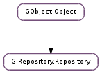

| static | dump(arg) |
| static | error_quark() |
| static | get_default() |
| static | get_search_path() |
| static | prepend_library_path(directory) |
| static | prepend_search_path(directory) |
| enumerate_versions(namespace_) | |
| find_by_error_domain(domain) | |
| find_by_gtype(gtype) | |
| find_by_name(namespace_, name) | |
| get_c_prefix(namespace_) | |
| get_dependencies(namespace_) | |
| get_info(namespace_, index) | |
| get_loaded_namespaces() | |
| get_n_infos(namespace_) | |
| get_shared_library(namespace_) | |
| get_typelib_path(namespace_) | |
| get_version(namespace_) | |
| is_registered(namespace_, version) | |
| load_typelib(typelib, flags) | |
| require(namespace_, version, flags) | |
| require_private(typelib_dir, namespace_, version, flags) |
None
None
| Name | Type | Access |
|---|---|---|
| parent | GObject.Object | r |
Bases: GObject.Object
| Parameters: | arg (str) – |
|---|---|
| Raises: | GLib.GError |
| Return type: | bool |
| Returns: | The global singleton GIRepository.Repository |
|---|---|
| Return type: | GIRepository.Repository |
Returns the singleton process-global default GIRepository.Repository. It is not currently supported to have multiple repositories in a particular process, but this function is provided in the unlikely eventuality that it would become possible, and as a convenience for higher level language bindings to conform to the GObject.Object method call conventions.
All methods on GIRepository.Repository also accept None as an instance parameter to mean this default repository, which is usually more convenient for C.
| Returns: | list of strings |
|---|---|
| Return type: | [str] |
Returns the search path the GIRepository.Repository will use when looking for typelibs. The string is internal to GIRespository and should not be freed, nor should the elements.
| Parameters: | namespace_ (str) – GI namespace, e.g. “Gtk” |
|---|---|
| Returns: | the array of versions. |
| Return type: | [str] |
Obtain an unordered list of versions (either currently loaded or available) for namespace_ in this repository.
| Parameters: | domain (int) – a GLib.Error domain |
|---|---|
| Returns: | GIRepository.EnumInfo representing metadata about domain ‘s enum type, or None |
| Return type: | GIRepository.BaseInfo |
Searches for the enum type corresponding to the given GLib.Error domain. Before calling this function for a particular namespace, you must call GIRepository.Repository.require () once to load the namespace, or otherwise ensure the namespace has already been loaded.
| Parameters: | gtype (GObject.GType) – GObject.Type to search for |
|---|---|
| Returns: | GIRepository.BaseInfo representing metadata about type, or None |
| Return type: | GIRepository.BaseInfo |
Searches all loaded namespaces for a particular GObject.Type. Note that in order to locate the metadata, the namespace corresponding to the type must first have been loaded. There is currently no mechanism for determining the namespace which corresponds to an arbitrary GObject.Type - thus, this function will operate most reliably when you know the GObject.Type to originate from be from a loaded namespace.
| Parameters: | |
|---|---|
| Returns: | GIRepository.BaseInfo representing metadata about name, or None |
| Return type: |
Searches for a particular entry in a namespace. Before calling this function for a particular namespace, you must call GIRepository.Repository.require () once to load the namespace, or otherwise ensure the namespace has already been loaded.
| Parameters: | namespace_ (str) – Namespace to inspect |
|---|---|
| Returns: | C namespace prefix, or None if none associated |
| Return type: | str |
This function returns the “C prefix”, or the C level namespace associated with the given introspection namespace. Each C symbol starts with this prefix, as well each GObject.Type in the library.
Note: The namespace must have already been loaded using a function such as GIRepository.Repository.require () before calling this function.
| Parameters: | namespace_ (str) – Namespace of interest |
|---|---|
| Returns: | Zero-terminated string array of versioned dependencies |
| Return type: | [str] |
Return an array of all (transitive) dependencies for namespace namespace_, including version. The returned strings are of the form namespace-version.
Note: The namespace must have already been loaded using a function such as GIRepository.Repository.require () before calling this function.
| Parameters: | |
|---|---|
| Returns: | GIRepository.BaseInfo containing metadata |
| Return type: |
This function returns a particular metadata entry in the given namespace namespace_. The namespace must have already been loaded before calling this function. See GIRepository.Repository.get_n_infos () to find the maximum number of entries.
| Returns: | List of namespaces |
|---|---|
| Return type: | [str] |
Return the list of currently loaded namespaces.
| Parameters: | namespace_ (str) – Namespace to inspect |
|---|---|
| Returns: | number of metadata entries |
| Return type: | int |
This function returns the number of metadata entries in given namespace namespace_. The namespace must have already been loaded before calling this function.
| Parameters: | namespace_ (str) – Namespace to inspect |
|---|---|
| Returns: | Full path to shared library, or None if none associated |
| Return type: | str |
This function returns the full path to the shared C library associated with the given namespace namespace_. There may be no shared library path associated, in which case this function will return None.
Note: The namespace must have already been loaded using a function such as GIRepository.Repository.require () before calling this function.
| Parameters: | namespace_ (str) – GI namespace to use, e.g. “Gtk” |
|---|---|
| Returns: | Filesystem path (or $lt;builtin$gt;) if successful, None if namespace is not loaded |
| Return type: | str |
If namespace namespace_ is loaded, return the full path to the .typelib file it was loaded from. If the typelib for namespace namespace_ was included in a shared library, return the special string “$lt;builtin$gt;”.
| Parameters: | namespace_ (str) – Namespace to inspect |
|---|---|
| Returns: | Loaded version |
| Return type: | str |
This function returns the loaded version associated with the given namespace namespace_.
Note: The namespace must have already been loaded using a function such as GIRepository.Repository.require () before calling this function.
| Parameters: | |
|---|---|
| Returns: | |
| Return type: |
Check whether a particular namespace (and optionally, a specific version thereof) is currently loaded. This function is likely to only be useful in unusual circumstances; in order to act upon metadata in the namespace, you should call GIRepository.Repository.require () instead which will ensure the namespace is loaded, and return as quickly as this function will if it has already been loaded.
| Parameters: |
|
|---|---|
| Raises: | |
| Return type: |
| Parameters: |
|
|---|---|
| Raises: | |
| Returns: | a pointer to the GIRepository.Typelib if successful, None otherwise |
| Return type: |
Force the namespace namespace_ to be loaded if it isn’t already. If namespace_ is not loaded, this function will search for a ”.typelib” file using the repository search path. In addition, a version version of namespace may be specified. If version is not specified, the latest will be used.
| Parameters: |
|
|---|---|
| Raises: | |
| Returns: | a pointer to the GIRepository.Typelib if successful, None otherwise |
| Return type: |
Force the namespace namespace_ to be loaded if it isn’t already. If namespace_ is not loaded, this function will search for a ”.typelib” file within the private directory only. In addition, a version version of namespace should be specified. If version is not specified, the latest will be used.